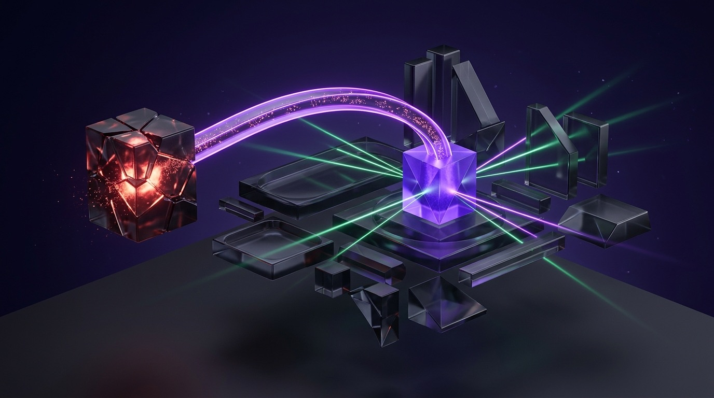
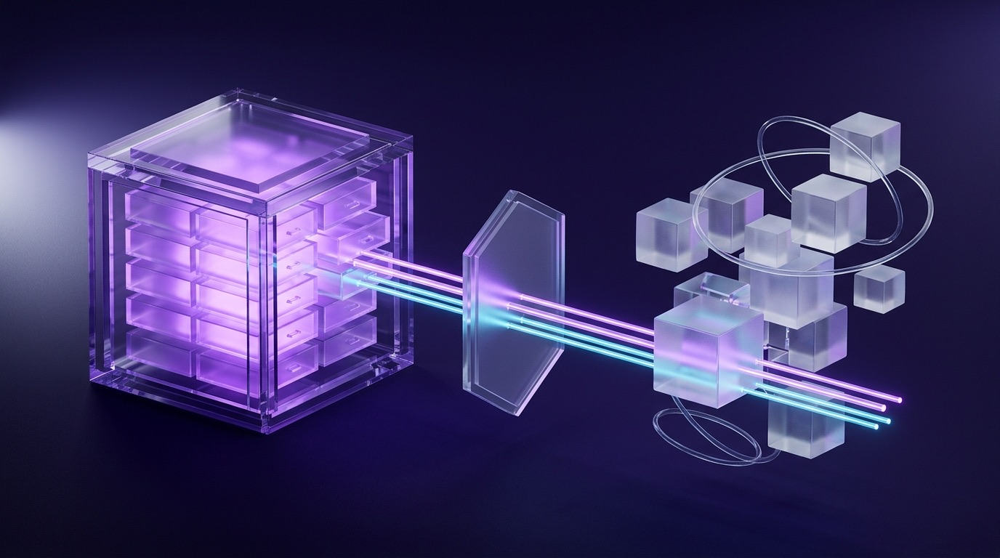

Upgrade the command line into an agentic development environment—combining filterable Command Blocks, autonomous Agent Mode with allowlist safety gates, parameterized {{arg}} Workflows, team Notebooks, WARP.md Rules, and Zero Data Retention.
@.Traditional terminals dump an unbroken river of text where errors scroll out of reach, while browser AI sidebars cannot see your live shell state or exit codes. Warp splits terminal execution into discrete, GPU-rendered Blocks inside a Rust-native client—unifying human shell speed, supervised Agent Mode, shared Warp Drive runbooks, and cloud orchestration.
One unified prompt handles both raw commands and natural-language tasks: press Cmd+I (macOS) or Ctrl+I (Windows/Linux) to toggle Agent Mode, or prepend ! to force an immediate shell command. Warp’s Active AI watches exit codes to surface inline fix banners (Ctrl+Enter) while Next Command predicts logical follow-ups from your live session.
@ inside Warp to attach the exact failing Command Block, relevant source files, and your repository’s WARP.md or AGENTS.md rules in two keystrokes.
Warp’s open-sourced Rust client delivers native GPU-accelerated speed on macOS, Linux, and Windows (including ARM64). Pick the usage plan or Bring-Your-Own-Key (BYOK) path that matches your daily agent volume.
Cmd+\ or Command Palette (Cmd+P).Ctrl+I inside remote SSH or container subshells to turn plain text streams back into interactive Warp Blocks and completions.Cmd+I (macOS) or Ctrl+I (Linux/Windows); use !cmd to bypass detection.AGENTS.md.
2. Set Safety Profile: Open Settings → Agents → Profiles to verify read-only Allowlists and destructive Denylist blocks.
3. Enable Secret Redaction: Confirm regex masking under Settings → Privacy → Secret redaction before sharing Blocks or Drive assets.
| Environment / Harness | Output & Context Model | Agent & Cloud Scale | Team Runbooks & Safety | Best-Fit Engineering Role |
|---|---|---|---|---|
| Warp ADE GUI + Agent CLI + Oz |
Discrete Command Blocks: Filter regex, share links, attach via @block. |
Local + Cloud (Oz): Parallel local tabs plus cron/PR cloud agents. | Warp Drive + Profiles: Synced Workflows, Notebooks, Env Vars & Denylist. | Full-stack shipping, DevOps triage, team onboarding & multi-agent control. |
| BYO CLI Agents Claude Code, Codex, Gemini |
Inside Warp Tabs: Gains rich editor input, Block search & visual diffs. | Single or Tabbed Local: Run multiple CLIs side-by-side with alert badges. | Repo Rules & Tool Gates: Reads AGENTS.md inside Warp’s diff viewer. |
Pairing specialized third-party coding harnesses with Warp’s UI ergonomics. |
| IDE Terminals VS Code / Cursor Shell |
Continuous Scrollback: Tightly coupled to open editor workspace tabs. | IDE-Scoped Agents: Great for file edits; awkward for long ops/SSH runs. | Workspace Settings: Minimal native team runbook or env sharing. | Quick single-repo unit tests while living full-time inside the editor. |
| Classic Shells iTerm2, tmux, Ghostty |
Raw VT100 Stream: Fast rendering, but zero native Block boundaries. | External CLI Only: Requires separate scripts or tools for AI assistance. | Dotfiles & Shell Aliases: Manual syncing; no built-in secret redaction. | Minimalist remote servers or legacy tmux layouts without AI workflows. |
Cmd+Shift++), and tab alert indicators whenever a session pauses for approval.
Beneath Warp’s clean dark canvas operate seven tightly connected surfaces: discrete Command Blocks, Active AI suggestions, the Cmd+I Universal Input, supervised Agent execution, visual Code Review diffs, the Warp Drive drawer, and the ZDR Privacy shield.
pytest auth/ 1
EXIT 1 • Opt+Shift+F • Share
AGENTS.md & patched auth/jwt.py leeway (+30s).pytest tests/auth/ -v? Approve ⏎
Agent Fix @Block#14 using @auth/jwt.py & @AGENTS.md
3
github, sentry
Shift+Tab Enum Ready
Opt+Shift+F), and one-click deep-link sharing (Cmd+Shift+S).
Ctrl+Enter) on errors and predicts your next terminal command automatically.
@ Context: Press Cmd+I / Ctrl+I to switch shell vs. Agent Mode; type @ to attach Blocks, files, symbols, or Drive items.
stdout/stderr to self-correct while honoring your Profile’s Allowlist and Denylist gates.
Cmd+Shift++ to step through hunks, edit manually, or leave inline notes for the agent to resolve.
Cmd+\ to launch parameterized Workflows, runnable Notebooks, static Env Vars, and shared prompts.
Because Warp treats every command and its output as a bounded card rather than perishable scrollback text, debugging logs, sharing live incident evidence, and feeding clean failure context into AI all happen in seconds.

@ lets Agent Mode inspect exact exit codes and stack traces without copy-paste guesswork.
Opt+Shift+F)
Press Option+Shift+F (macOS) or Alt+Shift+F (Windows/Linux) to filter inside a single noisy Block using plaintext or regex, invert matches, toggle case, or expand surrounding context lines without erasing output.
Cmd+Shift+S)
Open the kebab menu (...) or press Cmd+Shift+S on any finished Block to title it, pick prompt/command/output visibility, and copy a web permalink or HTML embed. Audit or revoke links under Settings → Shared blocks.
@
Type @ in Agent Mode to fuzzy-search recent Blocks—even from a separate server log pane—alongside files, directories, and code symbols so the agent reasons directly over real terminal output.
Whenever you finally nail a gnarly docker, ffmpeg, or kubectl one-liner, save that Block straight into Warp Drive as a parameterized Workflow so nobody on your team ever types it from memory again.
# 1. Run a noisy command and filter locally with Option+Shift+F (regex: ERROR|OOMKilled, +3 context lines):
kubectl logs deploy/worker-pool -n production --since=30m
# 2. Press Cmd+I for Agent Mode and attach the exact failing Block + manifest via @:
Diagnose the OOMKilled exit in @kubectl-logs-worker-pool, inspect memory limits in @k8s/worker-deployment.yaml,
and propose a minimal diff with /plan before modifying any files.Settings → Agents → Warp Agent → Active AI to let Warp surface contextual prompt chips right below failing commands. Press Ctrl+Enter (macOS) to hand the failing Block to Agent Mode with one stroke.
Unlike chat tools trapped outside your shell, Warp Agent Mode runs inside a genuine PTY terminal—driving interactive CLIs and REPLs, catching live stderr failures to self-correct, and obeying strict Profile permission boundaries.
/plan Modes/plan): Ask the agent to emit a step-by-step plan and scope check before running edits or tests across sensitive repositories.Cmd+Shift++): Inspect every proposed edit hunk-by-hunk (↑/↓) across files (←/→), edit inline, or leave targeted review comments./plan to fix the flaky auth retry
[2. @ Context] anchored to @Block#14 & @src/client.ts,
[3. Rules] respecting AGENTS.md test commands,
[4. MCP/Shell] querying github MCP only read-only,
[5. Safety Gate] under a Profile with Denylist blocking rm -rf & git push.
| Permission Layer | How It Behaves in Agent Mode | Recommended Regex / Policy Setting |
|---|---|---|
| Command Allowlist | Auto-executes safe read-only inspections without interrupting your flow. | ls(\s.*)?, grep(\s.*)?, which .*, git status |
| Agent Decides | Profile lets the model run routine local checks while prompting on risky steps. | Best default for local feature branches with unit test suites. |
| Always Ask | Pauses before file writes, package installs, or MCP mutations for human click. | Recommended for production configs, IAM changes, or DB schemas. |
| Command Denylist | Highest Precedence: Overrides Allowlist & always_allow to force a confirmation gate. |
rm -rf.*, sudo.*, git push.*--force, DROP TABLE |
# Settings -> Agents -> Profiles -> Permissions (Command Denylist strictly overrides Allowlist):
# Command Allowlist (auto-run): ^ls(\s.*)?$ | ^grep(\s.*)?$ | ^git (status|diff|log)(\s.*)?$
# Command Denylist (always ask): ^rm -rf.* | ^sudo.* | ^curl.*\|\s*(ba)?sh
# Bypass note: "Run until completion" (Cmd+Shift+I) skips denylist for the active task only—use sparingly.WARP.md Rules
Stop copying brittle shell snippets out of stale wiki pages. Warp Workflows turn multi-line commands into searchable {{arg}} templates with Enum pickers, while uppercase AGENTS.md and WARP.md files anchor every AI session in repository standards.
{{arg}}
Store .yaml files in ~/.warp/workflows/ (macOS/Linux) or %APPDATA%\warp\Warp\data\workflows\ (Windows), or sync in Warp Drive. Open via Cmd+P and hop across arguments with Shift+Tab.
Switch an argument’s type to Enum in the workflow editor: use Static for fixed choices (staging, prod) or Dynamic to run a shell command at runtime for live Kubernetes contexts or Git branches.
AGENTS.md & WARP.md
New repos default to AGENTS.md, while legacy WARP.md stays supported and takes precedence if both coexist. CRITICAL: Filenames must be ALL CAPS—lowercase agents.md is silently ignored!
{{arg}}) & Project Rule File# Save to ~/.warp/workflows/k8s-rollout-status.yaml (or create in Warp Drive & set {{cluster}} type -> Dynamic Enum)
---
name: Inspect Kubernetes Rollout & Recent Pods
command: |-
kubectl config use-context {{cluster}}
kubectl rollout status deployment/{{service}} -n {{namespace}} --timeout=90s
tags:
- kubernetes
- deploy
description: Switch context safely via Enum picker and tail deployment rollout status.
arguments:
- name: cluster # Set Type -> Enum (Dynamic: kubectl config get-contexts -o name)
description: Target Kubernetes context from kubeconfig
default_value: staging-us-east
- name: service # Letters, digits, hyphens, underscores (never start with a digit)
description: Deployment name to inspect
default_value: api-gateway
- name: namespace # Set Type -> Enum (Static: staging, production)
description: Target Kubernetes namespace
default_value: staging# Repo Root: AGENTS.md (or WARP.md for override; MUST BE ALL CAPS; supports subdirectory overrides)
# Build & Verification
- Always run "pnpm --filter @app/api test" inside a Warp Block after modifying route handlers.
- Never edit generated OpenAPI types under packages/sdk/generated/; regenerate via "pnpm codegen".
# Safety & Architecture Guardrails
- Database migrations require explicit human confirmation; never run destructive "prisma migrate reset" autonomously.
- Load local API secrets from Warp Drive Environment Variables rather than committing .env tokens.AGENTS.md files inside subdirectories like infra/terraform/AGENTS.md for localized guardrails, while storing personal formatting or commit conventions once inside Warp Drive Global Rules.
Warp Drive (Cmd+\) turns scattered scripts, onboarding checklists, and environment configs into live, cloud-synced assets—while Model Context Protocol (MCP) bridges Warp agents directly into GitHub, Postgres, Sentry, and internal APIs.

| Drive / Extension Asset | Where It Lives & Launches | Operational Superpower |
|---|---|---|
| Interactive Notebooks | Warp Drive sidebar (Cmd+\) or Command Palette (Cmd+P) |
Combine rich Markdown narrative with clickable, runnable shell command blocks—eliminating copy-paste errors during incident response or new-hire onboarding. |
| Parameterized Workflows | Warp Drive & local .yaml folder |
Share team commands with {{arg}} placeholders, descriptions, and Static/Dynamic Enum dropdowns triggered via Shift+Tab. |
| Static Env Vars | Warp Drive → Environment Variables | Store reusable non-hardcoded variables centrally and inject them into terminal sessions or workflows without pasting secrets into Markdown docs. |
| MCP Servers | ~/.warp/.mcp.json or {repo}/.warp/.mcp.json |
Connect local CLI (stdio) tools or remote Streamable HTTP/SSE servers so Agent Mode and Oz Cloud Agents query live external context. |
// Project-scoped .warp/.mcp.json (or global ~/.warp/.mcp.json) supporting both stdio and remote HTTP MCP servers:
{
"mcpServers": {
"github": {
"command": "npx",
"args": ["-y", "@modelcontextprotocol/server-github"],
"env": { "GITHUB_PERSONAL_ACCESS_TOKEN": "${GITHUB_PAT}" }
},
"internalDocs": {
"url": "https://mcp.internal.example.com/mcp/stream",
"headers": { "Authorization": "Bearer ${INTERNAL_MCP_TOKEN}" }
}
}
}
Drop these high-leverage workflows directly into Warp Agent Mode (Cmd+I), save them as YAML Workflows with Enum pickers, or embed them inside shared Warp Drive Notebooks.
| Recipe & Pattern | Copy-Paste Prompt or Workflow Pattern | Guardrail & Trigger |
|---|---|---|
| 1. Failed Block Root-Cause Fix Agent Mode + @ |
/plan Inspect the stack trace in @Block#latest and the handler in @src/routes/checkout.ts. Identify the root cause, patch only the affected helper, and re-run only the failing test file. |
Keep Allowlist read-only; review hunk in Cmd+Shift++. |
| 2. Zero-Typo Canary Rollout YAML + Dynamic Enum |
helm upgrade --install {{release}} ./charts/api -n {{env}} --set image.tag={{git_sha}} --atomic with Dynamic Enums pulling active namespaces and recent Git tags. |
Shift+Tab selects verified choices; zero manual typos. |
| 3. 3 AM Incident Triage Notebook Drive Notebook + Env |
Pair Markdown escalation steps with runnable blocks: curl -sf $PROD_HEALTH_URL/readyz, kubectl top pods -n prod, and a deep-link Block share button for Slack. |
Load $PROD_HEALTH_URL from Drive Env Vars cleanly. |
| 4. Multi-File API Migration Dispatch + Diff Review |
Refactor all v1 date serializers in @src/api/ to ISO-8601 UTC following @AGENTS.md. Pause for review before editing snapshots; run typecheck and unit specs after. |
Leave inline comments in Code Review panel to refine edge cases. |
| 5. Read-Only MCP Investigation MCP + Strict Profile |
Query @mcp:github open issues labeled "regression" from the last 7 days, correlate against git log --since="7 days ago", and write a triage summary without modifying code. |
Use Always Ask profile on any write-capable MCP tool. |
# Quick-Start Team Tab Layout (~/.warp/launch_configurations/api-triage.yaml) + Agent Starter:
# 1. Open launch config with 3 panes: [Server Logs] | [Agent Mode Cmd+I] | [Code Review Cmd+Shift++]
# 2. Paste in Agent Mode:
/plan Check @AGENTS.md, attach @Block:ServerLogs, list the top 2 hypotheses for the 502 spike,
and wait for my approval before running any curl or database command./plan when diagnosing subtle production state; switch to Dispatch Mode for mechanical migrations or test backfills across known patterns.
$TOKEN) inside Notebooks and Workflows instead of raw literals so Secret Redaction stays happy and team shares remain safe.
Running AI inside your primary shell demands strict credential hygiene. Warp defends sensitive code and API keys before packets ever leave your machine—combining client-side regex redaction, contractual Zero Data Retention, and a live Network Log.
********) under Settings → Privacy → Secret redaction → Hide secrets in denylist.Settings → Privacy.| Control / Guarantee | Free ($0) | Build ($20) & Max ($200) | Business ($50/seat) & Enterprise |
|---|---|---|---|
| LLM Zero Data Retention | Enforced across contracted LLMs | Enforced across contracted LLMs | Enforced + enterprise policy lock |
| Secret Redaction & Network Log | Built-in + custom regexes | Built-in + custom regexes | Org-standardized privacy policies |
| Inference & BYOK Routing | BYOK or pay-as-you-go | Included credits + BYOK option | Team API keys; AWS Bedrock / Gemini Ent. |
| Identity & Access Governance | Individual account | Individual + unlimited Drive share | SAML SSO, admin controls, custom SLAs |
| Shared Block Revocation | Manage via Settings → Shared blocks |
Manage via Settings → Shared blocks |
Centralized team Drive & link control |
# Custom Secret Redaction Regex Examples (Settings -> Privacy -> Secret redaction -> Custom secret redaction):
sk-(?:proj-|live-)?[A-Za-z0-9_-]{20,} # OpenAI / internal bearer API keys
gh[pousr]_[A-Za-z0-9]{36,} # GitHub fine-grained & classic personal tokens
postgres(?:ql)?://[^:\s]+:[^@\s]+@[^\s]+ # Database connection strings with embedded credentialsRun Until Completion & Shared LinksRun until completion (Cmd+Shift+I) temporarily bypasses the Command Denylist for the active task—never enable it in untrusted third-party repositories. Periodically prune old permalinks in Settings → Shared blocks.
Warp serves as your mission control across both local and cloud coding agents—coordinating Warp Agent Mode alongside Claude Code, Codex, or Gemini CLI locally, and scaling automated runs via Oz and Warp Factories.
Run Warp Agent Mode alongside Claude Code, Codex, or Gemini CLI inside vertical tabs with metadata and notification badges—jumping straight to whichever agent pauses for human input without tab-hunting.
No matter which CLI harness wrote the patch, open Warp’s Code Review panel (Cmd+Shift++) to inspect hunks side-by-side, edit edge cases manually, and send inline comments back to the agent.
Launch the standalone warp Agent CLI inside remote terminals or press Ctrl+I over SSH to Warpify subshells—preserving Block organization and AI diagnostics across cloud dev boxes.
Promote recurring dependency upgrades, CI failure triage, or Linear ticket sweeps to Oz (and Warp Factories) using oz agent profile list on cron, webhook, Slack, or GitHub triggers.
AGENTS.md so the entire team never hits that trap twice.
Consult this clinic whenever AGENTS.md rules fail to load, SSH subshells lose Block formatting, Denylist prompts surprise an autonomous run, or Warp Drive rejects a Workflow containing a secret—followed by our 6-point pre-flight check.
| Symptom / Issue | Root Cause | 10-Second Fix |
|---|---|---|
| 1. Agent ignores project rules in repo root | File was saved lowercase (agents.md / warp.md) or overridden by a sibling WARP.md. |
Rename strictly to ALL CAPS AGENTS.md or WARP.md; remember WARP.md takes precedence if both files sit in the same folder. |
2. Agent paused despite always_allow Profile |
Proposed command matched a regex inside your global Command Denylist. | Denylist strictly overrides Allowlists for safety. Inspect Settings → Agents → Profiles to approve once or refine the command safely. |
| 3. Warp Drive refuses to save Workflow or Prompt | Secret Redaction flagged an embedded API key, token, or credential literal. | Move the secret into Warp Drive Environment Variables and reference $VAR_NAME inside the YAML command instead of hardcoding it. |
| 4. Remote SSH shell lost Blocks & completions | Nested remote or container subshell has not been Warpified yet. | Press Ctrl+I to Warpify the active subshell (or enable SSH wrapper integration) so Blocks, filtering, and Agent Mode light back up. |
| 5. Agent guesses wrong error or stale terminal context | Prompt lacked explicit @block or @file anchors in Universal Input. |
Type @ inside Agent Mode to attach the exact failing Command Block plus target source files, or click the Active AI banner (Ctrl+Enter). |
| 6. Dynamic Enum picker shows empty dropdown | Backing shell command failed, errored silently, or lacked current auth/context. | Run the Dynamic Enum’s shell command standalone in a Block to verify clean newline-delimited stdout, then re-open the workflow via Cmd+P. |
| 7. Custom MCP tools missing in Agent Mode | Invalid JSON in .warp/.mcp.json or missing env string variable. |
Validate mcpServers JSON keys (command/args or url/headers), ensure all env values are strings, and restart the session. |
AGENTS.md (or overriding WARP.md) sits in repo root with explicit test and codegen commands.ls, grep, git status) while blocking destructive regexes (rm -rf, sudo).Hide secrets in denylist (********) and add custom org key patterns under Settings → Privacy.{{arg}} and Static or Dynamic Enums..warp/.mcp.json servers before dispatching agents.Cmd+Shift++) and verify a green test Block before committing.@-anchored Agent Mode, Enum-validated Warp Drive Workflows, uppercase AGENTS.md rules, and Zero Data Retention, every terminal session becomes fast, reproducible, and team-ready.